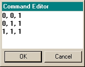

The Builder’s spreadsheet-style user interface generates ASAP commands in a "smart
editing" environment. In essence, each row of the spreadsheet is equivalent to a command.
Navigation
The Builder follows most of the Windows spreadsheet standards to:
- Select cells, rows, columns, and text.
- Cut and Paste in rows; Copy, Delete,
and Undo.
Column Features
- Column 0 (*): Click or scroll to select
the entire row. This column is reserved to display comment status and command
type.
- Column 1 (Type): Double-click any cell
in the column to display a popup menu of supported ASAP commands.
- All columns after Type (beginning with
Name): display data applicable to the command selected.
- Dynamic column headings: the headings
correspond to the row in focus and change as you move up and down the column.
- Column width: To adjust the width,
click the gray header row between any two columns; hold down the mouse button
while dragging a column either right or left. To apply to every column, resize
while in the first column.
Tool tip: place pointer over column heading to view the entire contents of a hidden
column heading.
Cell Features
- Double-click Type cells or press
Ctrl-Enter to display a popup menu of supported ASAP commands. The menu
structure reflects the four-step process in ASAP for creating geometry: 1) build
the system, 2) create the sources, 3) trace the rays, and 4) perform the
analysis.
- Edit a cell by either double clicking
without selecting the cell, or by pressing Enter when the cell is
selected.
- Dropdown list boxes are available in
cells where several known choices are available (for example, axis, points, and
unit cells).
-
If you select Edges > POINTS, you can edit the point
settings by double-clicking the cell in the Parameter column to open the Command Editor window. The Builder enters default settings for 2D
points.

To create a new line in the Command Editor, press Ctrl-Enter
Press Enter to exit the Command Editor and save changes
Press Esc (escape) to exit the Command Editor without saving changes
- Right-mouse click to open a popup menu
of common editing commands (see Short-Cut Keys below).
- Tool tip: place pointer over cell to
view the entire contents of the cell.
- Access Help for a command: press F1 in the cell, or select left-most cell of a row and then select Help> Command from the Builder window.
Command Help
You can access the Help topic for any ASAP command in your Builder spreadsheet by
selecting the command name, and selecting Command from the Help menu.
Alternatively, select the command name and press the F1 key to open the Help
topic.
Short-Cut Keys
| Undo | Ctrl+Z |
| Cut | Ctrl+X |
| Copy | Ctrl+C |
| Paste | Ctrl+V |
| Insert | Ins |
| Delete | Del |
| Preview | Ctrl-P |
| Line Status | Ctrl-Delete |
| Entity Status | Ctrl-Enter |
| Explode Lens | Ctrl+L |
| Help (cells) | F1 |